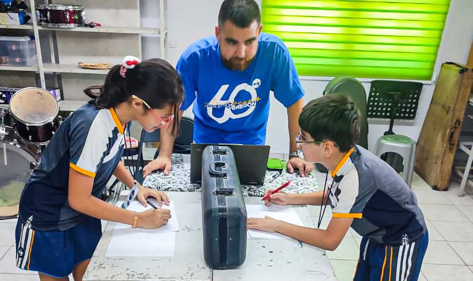
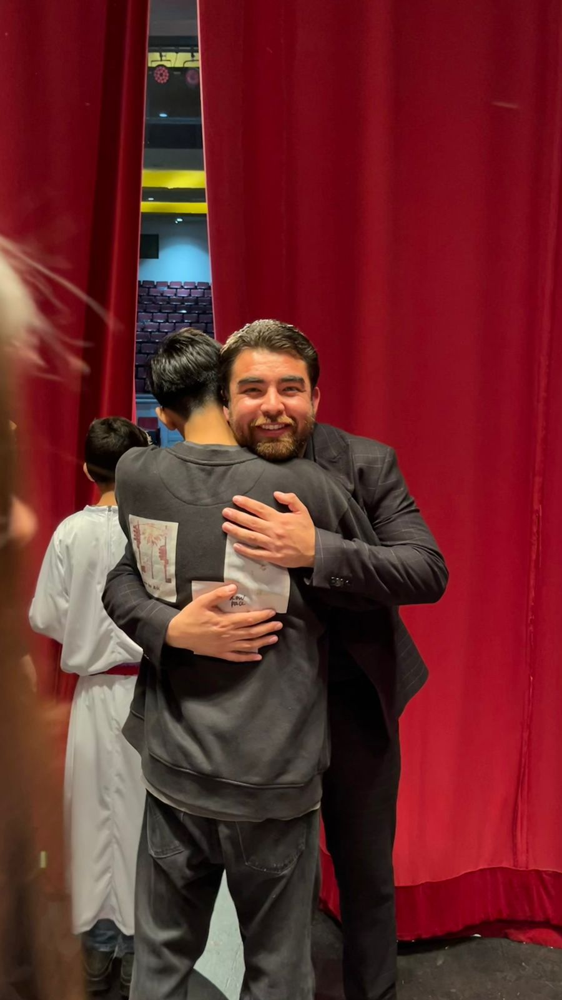
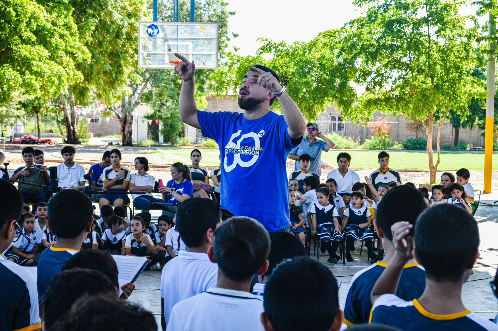
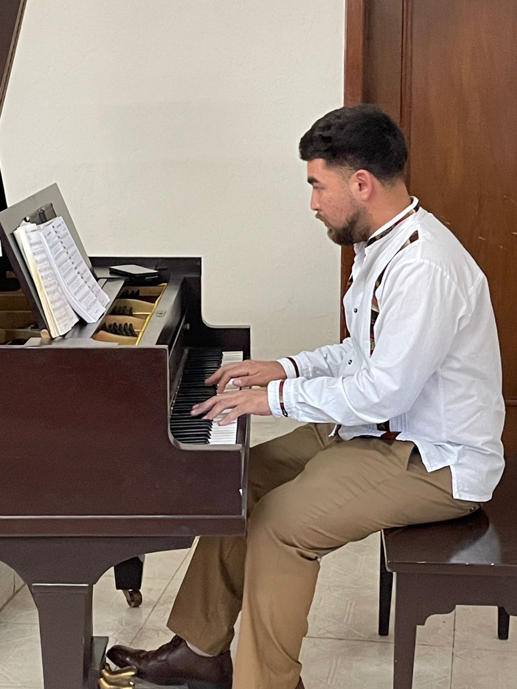
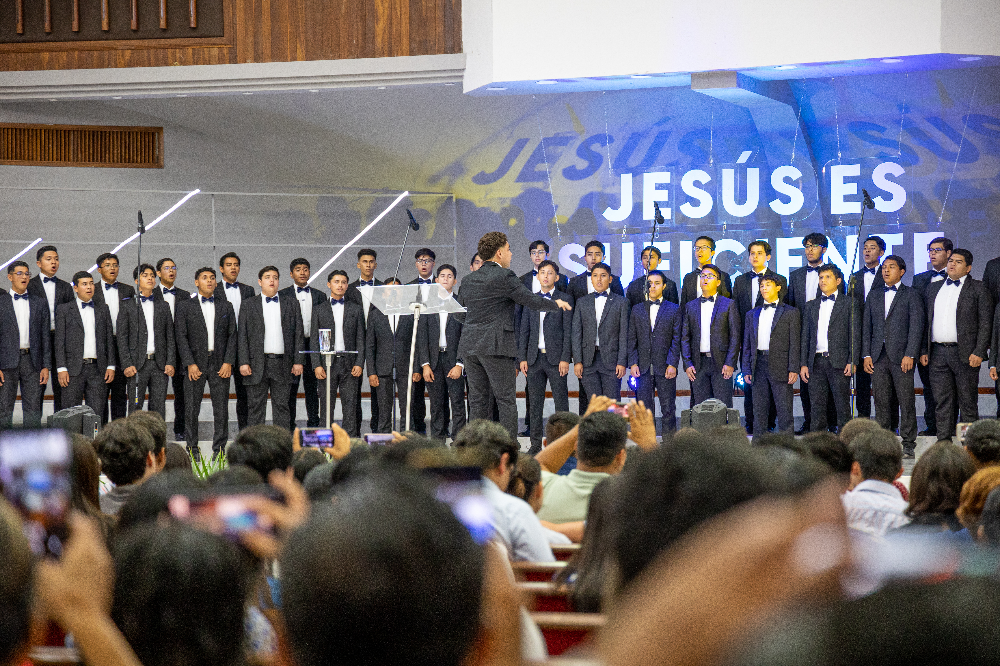
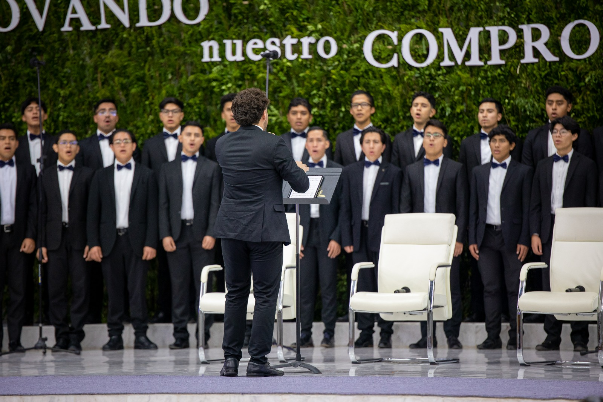
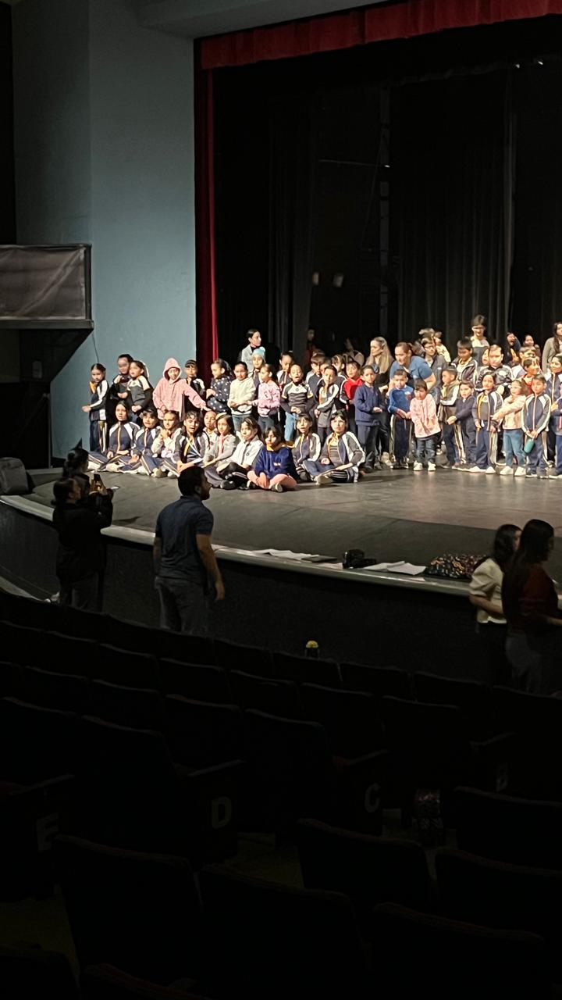
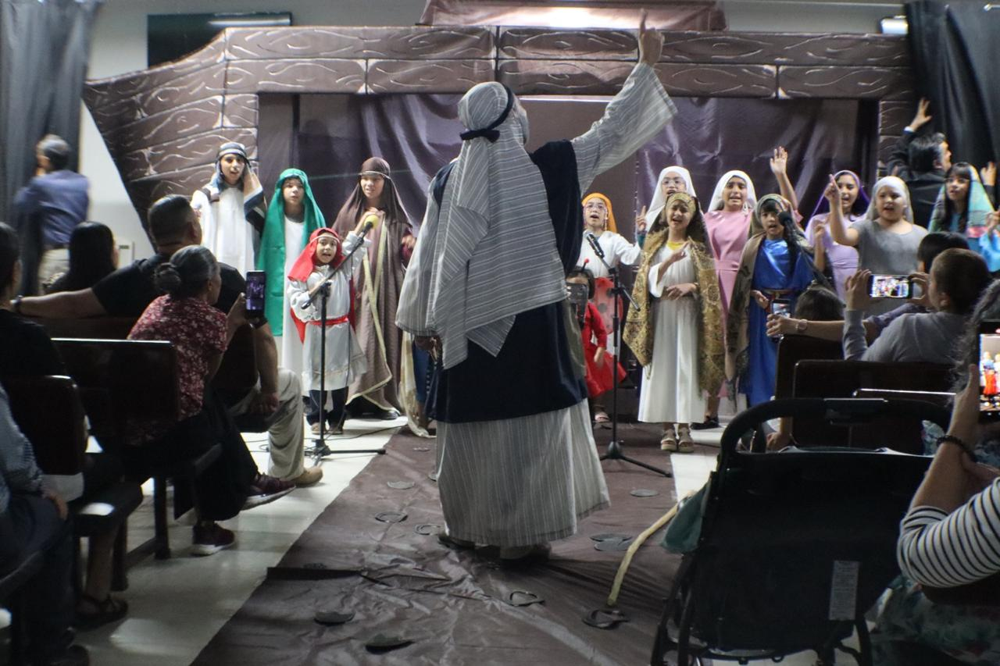
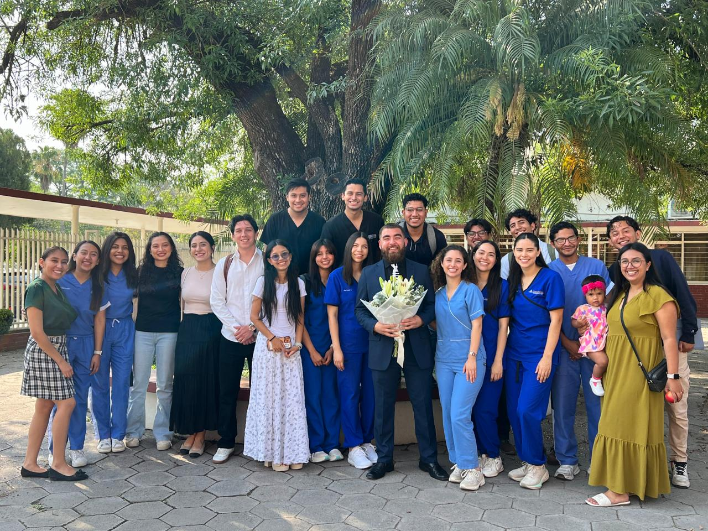

Enseñar música de calidad en diferentes contextos utilizando metodologías y herramientas tecnológicas apropiadas
He sido maestro de piano, enseñado en coros de personas sin formación musical previa y dado clases de teoría musical y solfeo desde preescolar hasta preparatoria.
Cada contexto demandó adaptaciones metodológicas distintas: desde el uso de narrativa y color con los más pequeños, hasta el trabajo técnico riguroso con los más avanzados.



Espacio para describir el contexto de cada evidencia: fecha, institución, nivel educativo y actividad específica que documenta la competencia.
Ejecutar obras musicales de manera individual o en conjuntos aplicando parámetros de la musicología y la interpretación artística
Toco el piano y disfruto de los instrumentos de aliento madera como el saxofón y el clarinete. Mi formación abarca tanto la interpretación solista como la participación en conjuntos instrumentales y vocales.
He tenido la oportunidad de acompañar coros, participar en ensambles de cámara y actuar como pianista funcional en contextos eclesiásticos y educativos.



Espacio para describir el contexto de cada evidencia: repertorio interpretado, evento, fecha e institución.
Arreglar y producir música de calidad aplicando conocimientos teóricos, artísticos y herramientas tecnológicas apropiadas
He desarrollado arreglos para coro y conjuntos de instrumentos, así como pistas de acompañamiento para diferentes contextos: eclesiástico, educativo y de concierto.
El proceso de arreglar música implica entender las voces, los timbres y las necesidades expresivas de cada ensamble, adaptando el material al nivel y al propósito.


Espacio para describir el contexto de cada evidencia: tipo de arreglo, ensamble destino, programa o evento donde se utilizó.
Liderar la actividad musical escolar y eclesiástica utilizando teorías y procesos administrativos en forma colaborativa y ética
Me encanta la gestión musical. He liderado ensambles y conjuntos, dirigido y creado varios coros, y me apasiona la creación de proyectos con impacto institucional y comunitario.
He aprendido que un departamento de música con visión, legado y estructura trasciende la persona y construye identidad institucional duradera.



Espacio para describir el contexto de cada evidencia: coro o ensamble, institución, fechas y logros alcanzados.
Generar aportes significativos a través de proyectos de investigación aplicados a la profesión
Desarrollé una investigación cualitativa titulada: "Desarrollo de la musicalidad desde la cotidianidad. Una perspectiva novedosa en la voz del músico en formación."
El proceso implicó identificar un problema real, plantear preguntas de investigación, recopilar datos mediante entrevistas y análisis, y comunicar los hallazgos de forma oral y escrita con rigor académico.



Documento completo de investigación
Ver / descargar investigación